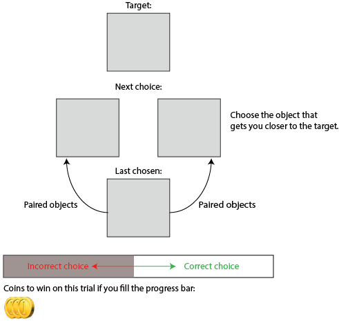
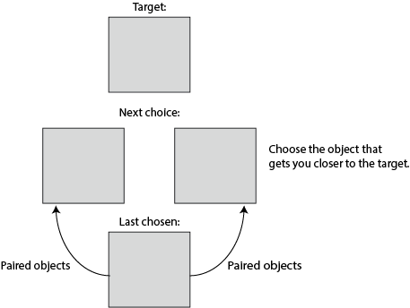

Title of Project: Mechanisms of Causal Inference and Decision Making in the Brain
This study has been approved by the University of Oxford Medical Sciences Inter-Divisional Research Ethics Committee; Project ID R49191/RE001
Click here to print this page:
Thank you for being willing to participate in our study. Your contribution to our research is very valuable and we appreciate your help.
This information page is to help you decide whether to participate in our study. It is up to you to choose whether you participate and you may withdraw from the study without penalty and without giving a reason.
What is this study about?
We are interested in understanding how people make decisions. In particular, we are interested in how people use knowledge that they have gained from past experience and apply it to help decision making.
Who is conducting this study?
Name, address and contact details of investigator:
Dr Mona Garvert
Center for Functional MRI of the Brain
Nuffield Department of Clinical Neurosciences
University of Oxford
Oxford OX3 9DU, UK compneuro@gmail.com
This experiment consists of different tasks, some of which you will do multiple times.
Each task takes approximately 5 minutes. You will get instructions for each one before it starts.
In most of the tasks you can gain or losecoins depending on your performance.
At the end of the experiment, the accumulated coins will be converted in £ (every 100 coins = 1£ extra) and this money will be paid to you in addition to the baseline payment.
If it happens that objects are not displayed at some point during the experiment, please ignore this and continue the task.
Important: DO NOT REFRESH the page!
This will cause the experiment to re-start from the very beginning.
You were invited back to participate in another session, because you performed really well in the experiment yesterday. Well done and thank you so much - we really appreciate the effort your are making to support our research!
Just like yesterday, this experiment consists of different tasks, some of which you will do multiple times.
Each task takes approximately 5 minutes. You will get instructions for each one before it starts.
In most of the tasks you can gain or losecoins depending on your performance.
At the end of the experiment, the accumulated coins will be converted in £ (every 100 coins = 1£ extra) and this money will be paid to you in addition to the baseline payment.
Your performance on today's tasks will depend on your memory for the pairs of objects you learned yesterday.
You will have only 1 opportunity to remind yourself of the pairs of objects!
In the tasks, you will not receive feedback on whether your choices were correct or incorrect. Nevertheless, your choices still affect how much extra money you will get.
If it happens that objects are not displayed at some point during the experiment, please ignore this and continue the task.
Today you are in a new world.
You will learn a new set of associations between the same objects you learned to pair yesterday. Try to ignore the object pairs you learned yesterday so you don't get confused.
If it happens that objects are not displayed at some point during the experiment, please ignore this and continue the task.
Thank you for performing really well again in the experiment yesterday. We really appreciate the effort your are making to support our research!
Today's experiment again consists of a few different tasks, which you already know from the past two days.
Each task takes approximately 5 minutes. You will get instructions for each one before it starts.
In most of the tasks you can gain or losecoins depending on your performance.
At the end of the experiment, the accumulated coins will be converted in £ (every 100 coins = 1£ extra) and this money will be paid to you in addition to the baseline payment.
Your performance on today's tasks will depend on your memory for the pairs of objects you learned in the past two days.
You probably noticed that the background colour changed from day 1 to day 2, and with the colour you learned new associations between the objects.
In today's experiment, we will ask you to perform the tasks you performed in the past two days, but sometimes based on your knowledge about associations in the red and sometimes based on your knowledge about associations in the blue world.
Which associations are relevant for your decision depends on the background colour of the screen. This colour can change on every trial.
Today, you will not receive feedback on whether your choices were correct or incorrect. Nevertheless, your choices still affect how much extra money you will get, in the same way as on days 1 and 2.
If it happens that objects are not displayed at some point during the experiment, please ignore this and continue the task.
Important: DO NOT REFRESH the page!
This will cause the experiment to re-start from the very beginning.
In this world certain objects are paired (or associated) with one another. Each object can be part of multiple object pairs.
To start the experiment, we will ask you to remember all pairs of objects in this world.
You will have as much time as you like to try and remember each object pair.
Make sure you remember the pairs of objects well!
This will be essential for some of the other tasks in this experiment, and
you will gain or lose coins depending on your performance in the other tasks.
Tip:
It is often easier to remember object pairings by imagining situations, sentences, interactions or stories with both objects of each pair.
Were these objects paired?
You will gain a coin by choosing the correct answer,
and lose a coin for each incorrect answer.
You now have the opportunity to remind yourself of the pairs.
Remember the pairs of objects by imagining a situation with both objects.
You will see each pair twice.
Memory test
In this part of the experiment, your task is to recall whether two presented objects were paired or not in the previous task.
You will gain a coin by choosing the correct answer,
and lose a coin for each incorrect answer.
Important:
The background colour determines whether the associations you learned on day 1 or day 2 are the ones that matter for your decision!
You will need to switch between these when the background colour changes.
You correctly remembered of object pairs.
Object orientation task
In this part of the experiment different objects will appear on the screen.
Your task will be to press one button if the object is in one orientation,
and a different button if the object is in another orientation.
For example:
If you see this orientation:
If you see this orientation:
Press F
Press J
In the beginning, you will not know which button to press for which orientation.
But you will receive feedback after each button press
indicating whether your choice was correct.
If the frame turns green, your choice was correct.
If it turns red, your choice was incorrect.
This will allow you learn over time which button to press for each object's orientation.
If you are unsure, please guess.
You will gain a coin for each correct button press
and lose a coin for each incorrect button press.
Try to be as quick and accurate as you can!
Please place your two index fingers on F and J.
Please place your two index fingers on F and J.
Press
J or F
depending on the orientation of the larger object.
You can ignore the small object.
End of this task
Correct choices in this block:
Average reaction time:
Please take a break.
Press the button when you are ready to continue.
Choice task
In this part of the experiment your task is to click through the cards with the objects to get coins.
In the centre of the screen you will see the card you last selected.
Above this card you can see two other objects, which you can choose next.
As you will see, these are both objects that are paired with the object on the card in the centre!
You can choose the next card by clicking on it.
There is no right or wrong choice here, but try to explore as many different associations of cards as possible in order to maximise the number of coins .
Press the button when you are ready to start.
Click on the card you would like to choose next.
The small card is the one you selected last.
Try to explore as many different associations of cards as possible in order to maximise the number of coins you can get in this task.
Distance task
In this part of the experiment you will be presented with one target object at the bottom of the screen and two goal objects presented on top of the target object.
Your task is to choose the object you would reach in fewer steps from the target object if you moved from association to association like you did in the previous task (see visualisation below).
Note that this time you will not be able to actually click from association to association, but you can try to do this in your head.
In other words, when you try to make this choice, try to think about the objects the target object is paired with, and the objects the paired objects are paired with and so on. Which of the two objects would you reach in fewer steps?
If you are unsure try to rely on your intuition.
Important:
The background colour determines whether the associations you learned on day 1 or day 2 are the ones that matter for your decision!
You will need to switch between these when the background colour changes.
You will gain a coin for each correct answer
and lose a coin for each incorrect one.
Option 1 Incorrect choice
Option 2 Correct choice
More steps
Fewer steps
Target
Note that you will not see the steps in the actual task - try to imagine them.
Press the button when you are ready to start.
Which of the options is closer to the target?
Click on the card you would reach in fewer steps
from the small card.
If you make the correct choice you will gain a coin.
If you make the incorrect choice you will lose a coin.
Option 1
Option 2
Target
Finding the pair task
This part is another test of your memory for object pairs.
You will be presented with one object at the top of the screen.
Your task is to pick the object it was paired with from the three objects
presented below.
You will gain a coin for each correctly remembered object pair
and lose a coin for each mistake you make.
Important:
The background colour determines whether the associations you learned on day 1 or day 2 are the ones that matter for your decision!
You will need to switch between these when the background colour changes.
Press the button when you are ready to start.
Which object is this one paired with?
Click on the correct one.
You will gain a coin by choosing the correctly answer,
and lose a coin for each incorrect answer.
End of this task
You correctly remembered of object pairs.
Finding the target task
In this part of the experiment your task is to find a particular target object.
The target object will be displayed at the top of the screen (see visualisation below).
In the centre of the screen you will see the card with the object you last selected.
Above this object you can see two cards with the objects you can choose next.
Both of these objects were paired with the object you last selected.
When you choose the next object you will be presented with a new set of objects the chosen object was paired with.
This means that by clicking through the objects you move from association to association, until you reach the target.
Below the objects, you can see a progress bar and a certain number of coins.
Each correct choice you make moves the progress bar closer to the end. If you fill it you get the number of coins displayed below.
If you make a mistake, the progress bar moves away from the end, and a coin will be subtracted.
This means that the fewer steps it takes you to reach the target, the more coins you will gain.

Important:
The background colour determines whether the associations you learned on day 1 or day 2 are the ones that matter for your decision!
You will need to switch between these when the background colour changes.
Press the button when you are ready to start.
Finding the target task
In this part of the experiment your task is to find a particular target object.
The target object will be displayed on the top of the screen (see visualisation below).
In the centre of the screen you will see the card with the object you last selected.
Above this object you can see two cards with the objects you can choose next.
Both of these objects were paired with the object you last selected.
When you choose the next object you will be presented with a new set of objects the chosen object was paired with.
This means that by clicking through the objects you move from association to association, until you reach the target.
Below the objects, you can see a progress bar and a certain number of coins.
Each correct choice you make moves the progress bar closer to the end. If you fill it you get the number of coins displayed below.
If you make a mistake, the progress bar moves away from the end, and a coin will be subtracted.
This means that the fewer steps it takes you to reach the target, the more coins you will gain.
Press the button when you are ready to start.
Finding the target task
In this part of the experiment your task is to find a particular target object.
The target object will be displayed on the top of the screen (see visualisation below).
In the centre of the screen you will see the card with the object you last selected.
Above this object you can see two cards with the objects you can choose next.
Both of these objects were paired with the object you last selected.
When you choose the next object you will be presented with a new set of objects the chosen object was paired with.
This means that by clicking through the objects you move from association to association, until you reach the target.
You will not receive feedback on whether your choices were correct or incorrect. Nevertheless, they will still affect how much extra money you will get.
This means that the fewer steps it takes you to reach the target, the more coins you will gain.

Important:
The background colour determines whether the associations you learned on day 1 or day 2 are the ones that matter for your decision!
You will need to switch between these when the background colour changes.
Press the button when you are ready to start.
Click on the object you would like to choose next to find the target object.
The object at the bottom is the one you selected last.
The fewer steps to the target, the more coins you will gain.
You will lose a coin for each incorrect choice.
Target:
Next choice:
Last chosen:
Coins to win on this trial if you fill the progress bar:
Well done, you collected the maximum number of coins on this trial!
This is the sequence of objects you selected: Have a careful look at the sequence. Sometimes it can help you do better in future trials.
Press the button to continue:
End of this task
Coins you collected in this block:
Please take a break.
Press the button when you are ready to continue.
Coins you collected in this part of the experiment:
Before finishing the experiment, we would be very grateful if you could give us some quick feedback.
On a scale from 1 (easy) to 10 (hard), how difficult did you find it to remember the object pairs?
Which task did you enjoy the most?
And which task did you enjoy the least?
Which task did you find the easiest?
And Which task did you find the hardest?
Do you have any other comments?
Please let us know if any of the instructions were unclear or if you noticed anything
unusual during the experiment, for example if sometimes the objects were not displayed,
or if the program froze at any point.
Thank you for your feedback!
Before finishing the experiment, we would be very grateful if you could give us some quick feedback.
On a scale from 1 (easy) to 10 (hard), how difficult did you find it to remember the object pairs today?
Do you have any other comments?
Please let us know if any of the instructions were unclear or if you noticed anything
unusual during the experiment, for example if sometimes the objects were not displayed,
or if the program froze at any point.
Thank you for your feedback!
End of the experiment
Thank you for participating!
You collected
coins in this experiment
so you will get a bonus of
£
You did very well and we would like to invite you for a follow-up experiment tomorrow.
Please check back on Prolific if you would be interested in participating.
Your participant ID is
Very important - Please note the ID down!
Please send us message in case any of the instructions were unclear or if you noticed anything
unusual during the experiment, for example if sometimes the objects were not displayed,
or if the program froze at any point. Thank you!
You will need it if you would like to participate in the follow-up study.
Important!
Click the button below to end the experiment and submit your task data.